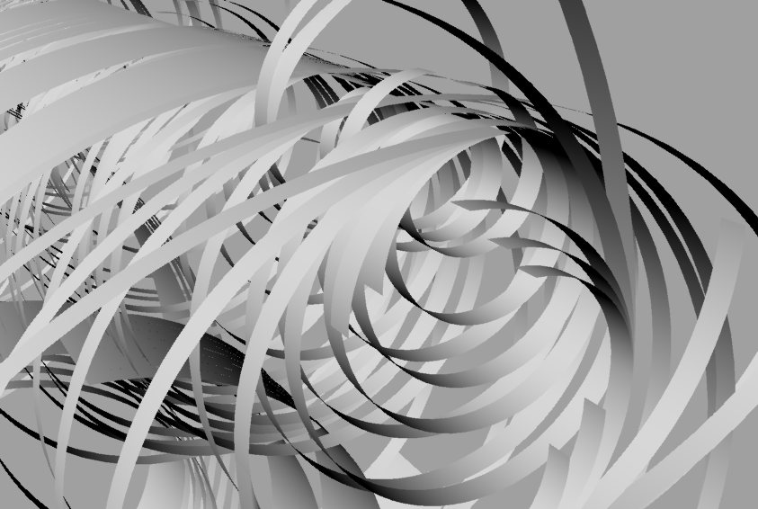
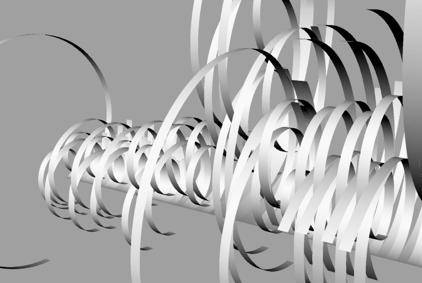
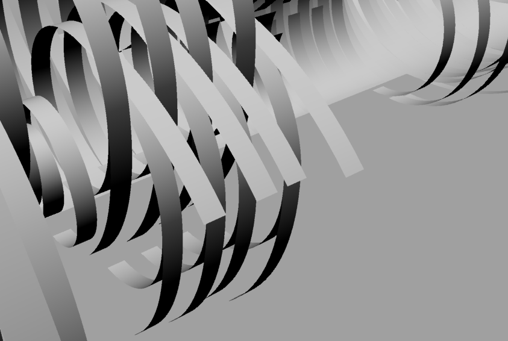
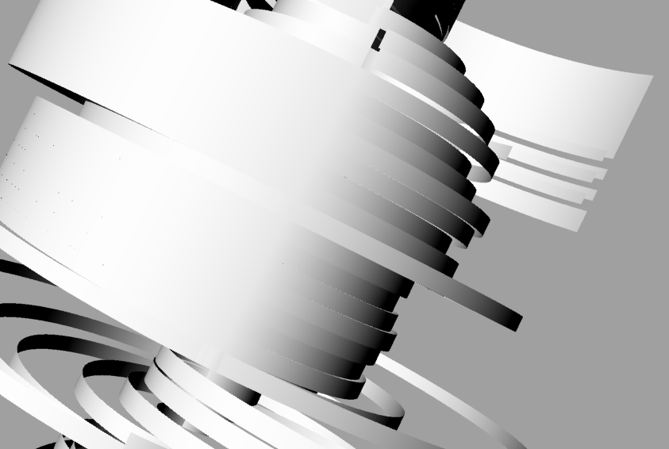

Sound Insight
Look, it's music!

From harmonics and harmony to meter and rhythm, music is full of numbers. Since math can closely describe all kinds of musical properties, could we use math to "translate" music to a visual form?
Sound is just vibrations that our ears can detect. Musical sound contains specific frequencies of vibrations, especially ones that sound nice together. But what makes certain frequencies sound like music? It's the ratios between the frequencies. Middle C vibrates at 261.6 Hz. The C an octave above, vibrates at 523.2 Hz, which is exactly twice Middle C. It has a nice simple ratio of 2/1. A 5th, which is is the difference between the first and second twinkles of "Twinkle Twinkle Little Star" has a ratio of 3/2.
If we think of each note as a circle, we could represent these ratios visually with the radius of different circles.
CIRCLE PIC
To cover the beat and rhythm, we'll say that a whole circle is a whole note, or a note that's held out for 4 counts. The distance around the circumference corresponds to type of note. A quarter note would be a quarter arc, an 8th note an 8th of the circumference.
Rhythm is the placement of sounds in time. Music is broken down into measures, often 3 or 4 beats per measure. Here I broke it off into two ways. Does it make more sense to let every measure start from the same place, or should the song continue from the point it left off? In reality, we hear it both ways. We can compare and we hear it as a continuation. So I did both. For the multiple measures, the arcs are linked tangentially.
I wonder actually if I displayed it as both, that would be interesting. These particular ones are from a song I wrote, which you can listen to here. And listen to more here.
The other factor was beat and rhythm, or how long each note is held out for
   